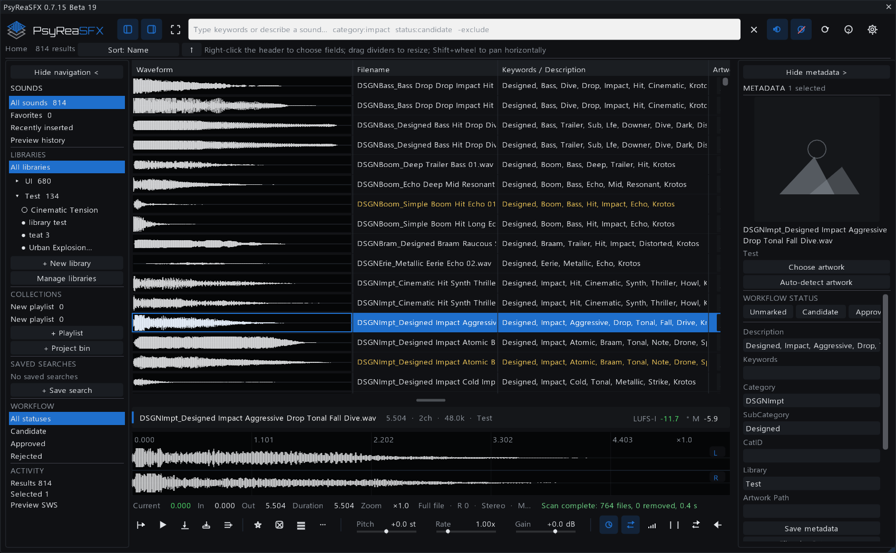
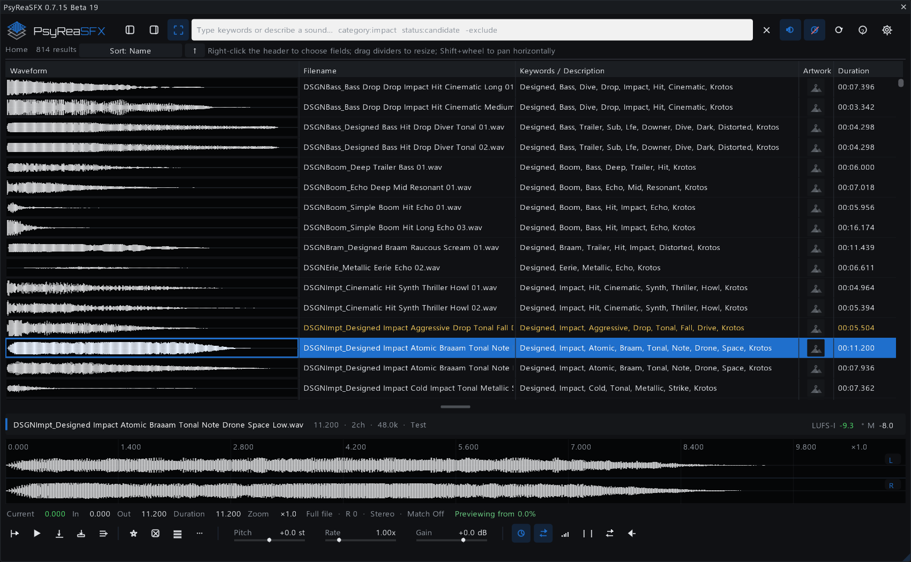
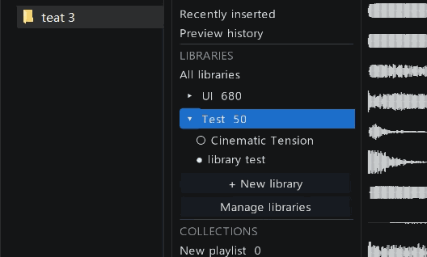
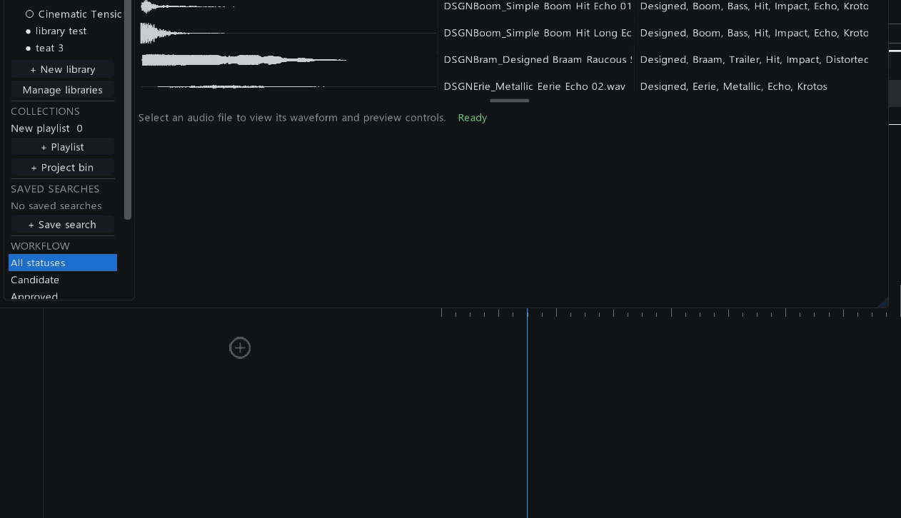
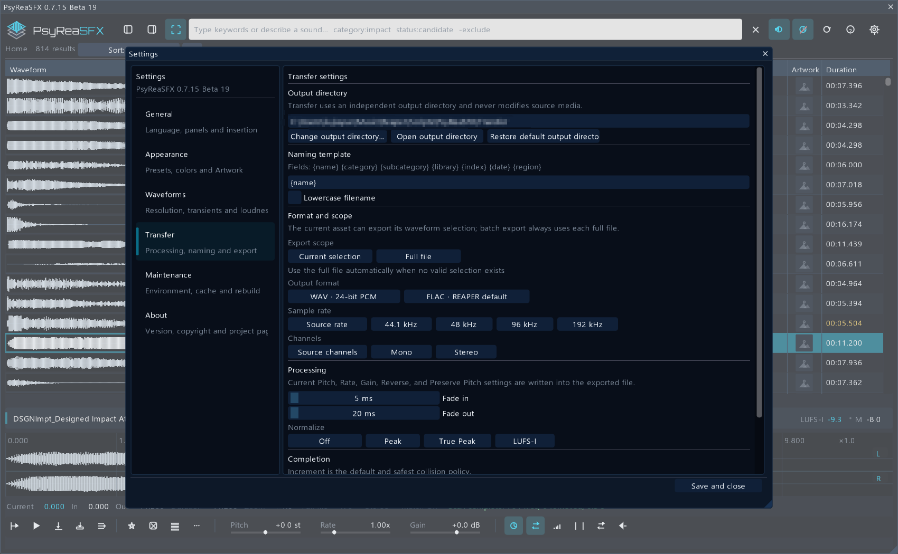

Stable channel
0.8.5
The default ReaPack release for everyday production work.
Get Stable ↗Browse, organize, audition and deliver large sound libraries without leaving REAPER.

CHOOSE YOUR RELEASE TRACK
The default ReaPack release for everyday production work.
Get Stable ↗Separate AI semantic search with DeepSeek and compatible APIs, plus optional local EfficientAT similarity.
Enable pre-release versions and install PsyReaSFX.lua Beta 7.9. On Windows x64, install the matching optional PsyReaSFX Neural Similarity package if needed.
View preview ↗ Install both packages with ReaPack ↓
FIND BY STRUCTURE AND SOUND
Beta 7.9 fixes AI completion and immediate local paging, and repairs waveform peak building for long files.
THE COMPLETE SOUND-LIBRARY LOOP
Keep discovery, decisions and delivery connected instead of rebuilding context across separate tools.
Search filenames and metadata, browse indexed folders, then audition from any point in an inline waveform.
Unify multiple folders as one logical library, then use Artwork, metadata, collections and workflow states.
Inspect channel lanes, select and loop a range, tune Pitch, Rate and Gain, and compare loudness.
Insert or drag into REAPER, preserve BWF placement, or render processed variants with Transfer.

LIBRARIES THAT MATCH REAL STORAGE
Create the logical library first, then attach locations across drives over time. Each source keeps its own path, online state and Artwork.
FROM WAVEFORM TO TIMELINE
Click an inline waveform to start at that exact moment. Build a precise range in the detailed preview, audition it, then drag the selection into the REAPER arrange view.

TRANSFER
Turn the full source, a waveform selection or a controlled batch of variants into new files with repeatable settings.

DESIGNED FOR DEPTH
Edit a non-destructive database, pin cover art and keep source files safe.
Combine text, library, UCS fields, marks and workflow states.
Build playlists, project bins, favorites and reusable saved searches.
Visible-first work, bounded queues and persistent waveform caches keep browsing responsive.
Read mono, stereo and up to eight detailed waveform lanes with focused views.
Insert on the current track, a new track, the BWF position or drag the selected range.
QUICK START
Import the repository in ReaPack, synchronize, then install PsyReaSFX. Future stable updates arrive through the same URL.
https://github.com/Psysia/PsyReaSFX/raw/main/index.xml
LEARN & BUILD